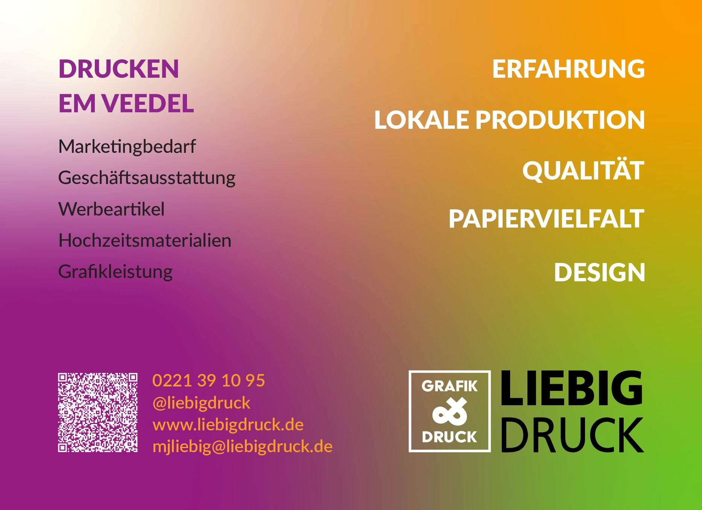

Hakan Demir
UX/UI Designer | Webdesigner
Ich gestalte moderne, benutzerfreundliche Websites und digitale Benutzeroberflächen mit Fokus auf Design, Funktionalität und User Experience.
Mehr über michHakan Demir
UX/UI Designer | Webdesigner
Ich gestalte moderne, benutzerfreundliche Websites und digitale Benutzeroberflächen mit Fokus auf Design, Funktionalität und User Experience.
Mehr über michKreativität trifft auf Struktur
Ich bin Webdesigner, UX/UI Designer und Mediengestalter Digital & Print mit einer Leidenschaft für modernes Design, benutzerfreundliche digitale Produkte und starke Markenauftritte. Mein Anspruch ist es, kreative Ideen in funktionale und ästhetische Lösungen zu verwandeln – von der ersten Konzeptidee bis zur finalen Umsetzung.
Meine berufliche Grundlage begann bereits mit meinem Studium als Drucklehrer. Nach meinem Umzug nach Deutschland habe ich meine Kenntnisse gezielt erweitert und meine zweijährige Umschulung zum Mediengestalter Digital und Print (Fachrichtung Designkonzeption) erfolgreich abgeschlossen. Während dieser Zeit konnte ich meine Fähigkeiten sowohl im klassischen Grafikdesign als auch im Webdesign und UX/UI kontinuierlich ausbauen.
Ausbildung & Weiterbildung
Mediengestalter Digital und Print
Umschulung – Fachrichtung Designkonzeption
08/2024 – 06/2026
Comcave.College GmbH, Köln
Aktuell habe ich meine zweijährige Umschulung zum Mediengestalter Digital und Print (Fachrichtung Designkonzeption) erfolgreich abgeschlossen und die Abschlussprüfung bei der IHK erfolgreich bestanden.
Während der Umschulung konnte ich meine Kenntnisse in den Bereichen UX/UI Design, Webdesign, Responsive Webdesign, Grafikdesign, Corporate Design sowie Printdesign erweitern.
Webdesign & Digitale
Medien
HTML5 & CSS3 JavaScript Grundlagen Responsive Webdesign Webstandards & Usability CMS-Systeme (Joomla) PHP & Datenbanken Grundlagen Digitalmedien konzipieren
UX/UI & Design
konzeption
User Experience (UX) Grundlagen
User Interface (UI) Design
Zielgruppen- und Marktanalyse
Konzeption und Visualisierung
Wireframes & Prototypen
Accessibility Grundlagen
Präsentation von Designkonzepten
Grafikdesign & Print
Adobe Creative Cloud
Photoshop, Illustrator, InDesign
Bildbearbeitung & Composing
Typografie & Layout
Corporate Design & Branding
Printdesign & Editorial Design
Druckvorstufe & PDF/X-Workflow
Technische Kompetenzen
Ich arbeite sicher mit der Adobe Creative Cloud, insbesondere mit Photoshop, Illustrator, InDesign und Acrobat. Ergänzend bringe ich Grundkenntnisse in Adobe Premiere Pro und After Effects für einfache Video- und Motion-Projekte mit.
Sehr Gute Kenntnisse
Adobe Photoshop · InDesign · Illustrator · Acrobat · Microsoft Office
Gute Kenntnisse
HTML5 · CSS3 · Responsive Webdesign Visual Studio Code
Grundkenntnisse
JavaScript · Bootstrap Joomla · PHP · MySQL CMS-Systemen
Beschäftige mich mit:
Figma · Wireframes Prototyping · Responsive Layouts · Usability

Praxiserfahrung
Während meiner Umschulung absolvierte ich ein sechsmonatiges Praktikum bei der Liebig Druck GmbH in Köln.
Dort gestaltete und optimierte ich Druckdaten, entwickelte Werbematerialien und unterstützte die Produktion
im Bereich Grafikdesign und Druckvorstufe.
Zusätzlich war ich mehrere Jahre ehrenamtlich als Mediengestalter für das Quartiersbüro der Stadt Bergheim tätig.
Dabei entstanden zahlreiche Flyer, Broschüren, Plakate und Informationsmaterialien für verschiedene Veranstaltungen und Projekte.
So arbeite ich
Ich arbeite strukturiert, lösungsorientiert und mit einem hohen Qualitätsanspruch. Neue Technologien und Designtrends motivieren mich, mein Wissen kontinuierlich zu erweitern und kreative Lösungen zu entwickeln.
Besonders wichtig sind mir:
Konzeptionelles Denken · Analytische Arbeitsweise Liebe zum Detail · Teamfähigkeit · Zuverlässigkeit Lernbereitschaft · Offene Kommunikation
Mein Ziel
Ich möchte Unternehmen dabei unterstützen, Marken sichtbar zu machen und digitale Produkte zu entwickeln,
die Menschen gerne nutzen. Mein Fokus liegt auf der Verbindung von Grafikdesign, Webdesign und UX/UI,
um ganzheitliche Gestaltungslösungen zu schaffen.
Jedes neue Projekt bietet mir die Möglichkeit, kreative Ideen einzubringen, Verantwortung zu übernehmen
und mich fachlich sowie persönlich weiterzuentwickeln.